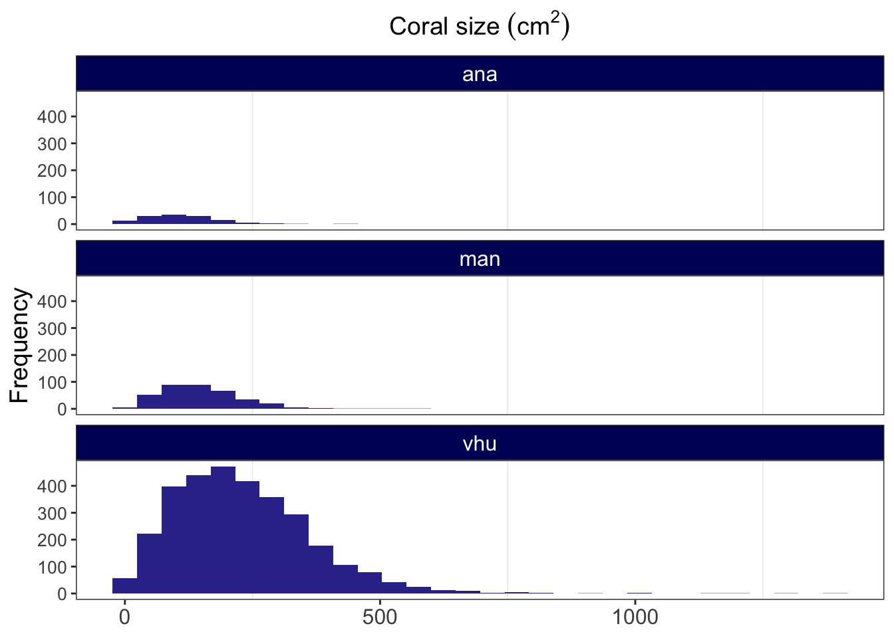
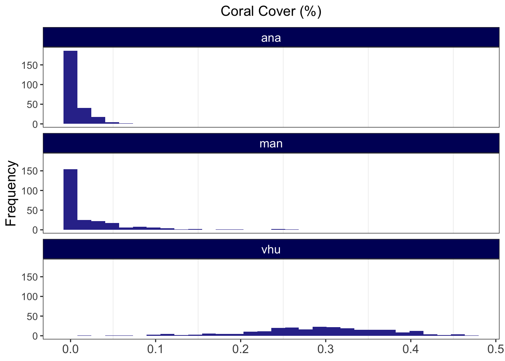
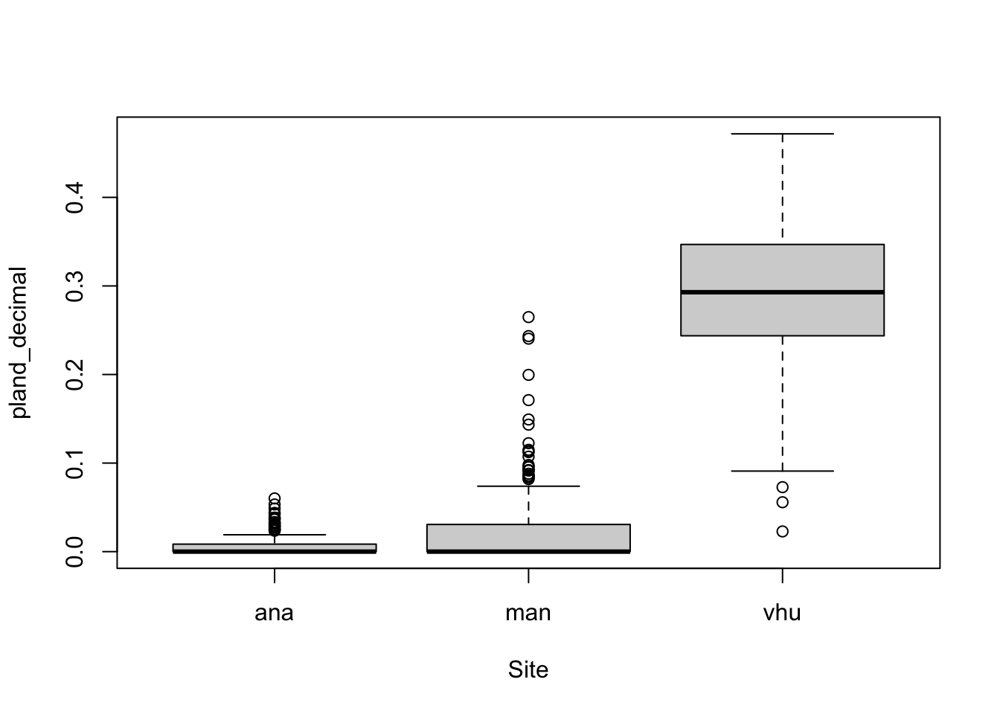
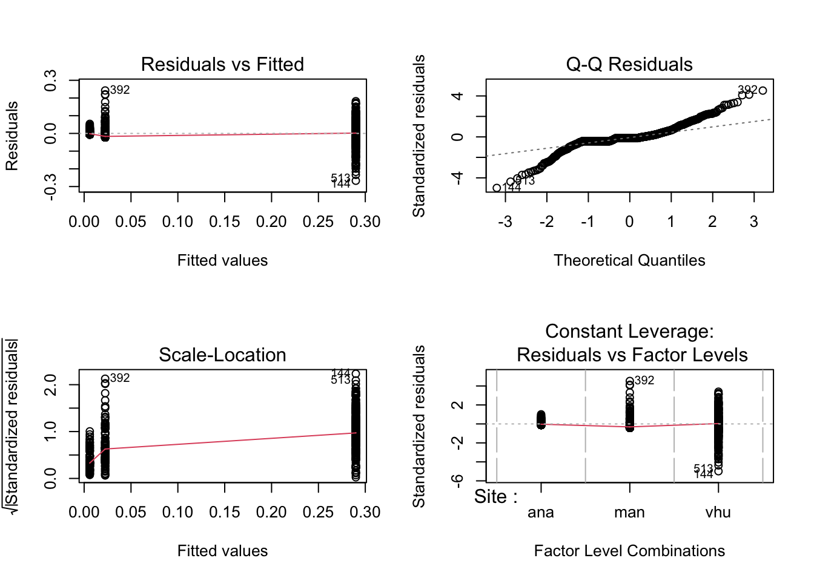
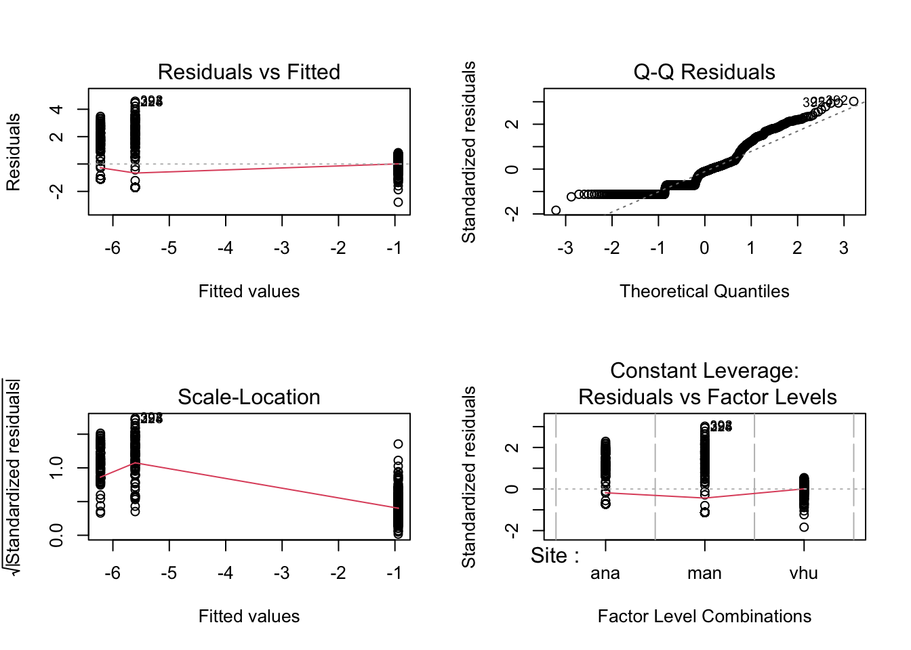
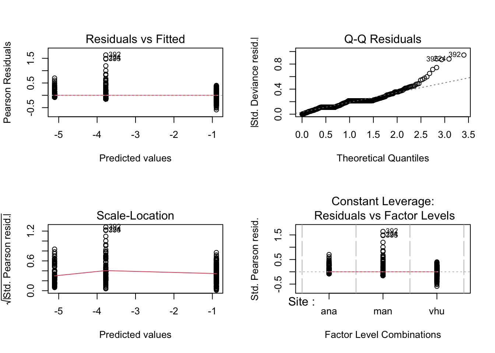

poci_size <- read.csv('coral_size.csv')Supplementary Material II
Colony Size
poci_size.gg <- read_csv("poci_size_main.csv")Rows: 3639 Columns: 10
── Column specification ────────────────────────────────────────────────────────
Delimiter: ","
chr (3): level, Site, cover
dbl (7): layer, class, id, area, enn, para, size_cm
ℹ Use `spec()` to retrieve the full column specification for this data.
ℹ Specify the column types or set `show_col_types = FALSE` to quiet this message.ggplot(poci_size.gg, aes(x = size_cm)) +
geom_histogram(fill = "#333399") +
#below here is ylabel, xlabel, and main title
ylab("Frequency") +
xlab(NULL) +
ggtitle(expression("Coral size " (cm**2))) +
theme_bw() +
facet_wrap(~ Site, ncol = 1) +
#theme sets sizes, text, etc
theme(axis.title.x = element_text(size = 14),
axis.title.y = element_text(size = 14),
axis.text.y = element_text(size= 10),
axis.text.x = element_text(size = 12),
legend.text = element_text(size = 12),
legend.title = element_text(size = 12),
plot.title = element_text(hjust = 0.5, size = 14),
# change plot background, grid lines, etc (just examples so you can see)
panel.background = element_rect(fill = "white"),
panel.grid.minor.y = element_blank(),
panel.grid.major = element_blank(),
plot.background = element_rect(fill = "white"),
legend.background = element_rect(fill = "white"),
strip.text.x = element_text(size = 12, colour = "#FFFFFF"),
strip.background = element_rect(fill = '#000066')
)`stat_bin()` using `bins = 30`. Pick better value with `binwidth`.
poci_size2 <-
poci_size %>%
as_tibble() %>%
mutate(size_cm = area*10000) %>%
group_by(Site) %>%
dplyr::summarize(mean = mean(size_cm),
sd = sd(size_cm),
n = n(),
se = sd/sqrt(n)
) %>%
mutate(se = sd / sqrt(n),
lower.ci = mean - qt(1 - (0.05 / 2), n - 1) * se,
upper.ci = mean + qt(1 - (0.05 / 2), n - 1) * se) %>%
mutate_at(vars(Site), factor) %>%
add_column(
location = c('Anakena', 'Manavai', 'Southeast')
) %>%
mutate_at(vars(location), factor)poci_size2# A tibble: 3 × 8
Site mean sd n se lower.ci upper.ci location
<fct> <dbl> <dbl> <int> <dbl> <dbl> <dbl> <fct>
1 ana 111. 73.8 136 6.33 98.2 123. Anakena
2 man 151. 82.7 372 4.29 142. 159. Manavai
3 vhu 231. 137. 3131 2.44 227. 236. Southeastpoci_size.gg <-
poci_size %>%
mutate(size_cm = area*10000) %>%
as_tibble() %>%
mutate_at(vars(Site), factor)poci_size.gg# A tibble: 3,639 × 10
layer level class id Site cover area enn para size_cm
<int> <chr> <int> <int> <fct> <chr> <dbl> <dbl> <dbl> <dbl>
1 1 patch 1 2 ana coral 0.0165 0.111 42.0 165.
2 1 patch 1 3 ana coral 0.0261 0.111 32.1 261.
3 1 patch 1 4 ana coral 0.0162 0.0598 44.3 162.
4 1 patch 1 5 ana coral 0.0149 0.230 38.6 149.
5 1 patch 1 6 ana coral 0.00788 0.535 61.5 78.8
6 1 patch 1 7 ana coral 0.0148 0.532 41.1 148.
7 1 patch 1 8 ana coral 0.0109 0.0598 50.6 109.
8 1 patch 1 9 ana coral 0.0101 0.346 52.6 101.
9 1 patch 1 10 ana coral 0.0262 0.192 38.4 262.
10 1 patch 1 11 ana coral 0.00620 0.137 71.6 62.0
# ℹ 3,629 more rowsmodel_1.lm <- lm(size_cm ~ Site, data = poci_size.gg)model_1.lm
Call:
lm(formula = size_cm ~ Site, data = poci_size.gg)
Coefficients:
(Intercept) Siteman Sitevhu
110.67 40.18 120.81 summary(model_1.lm)
Call:
lm(formula = size_cm ~ Site, data = poci_size.gg)
Residuals:
Min 1Q Median 3Q Max
-231.46 -91.09 -16.44 70.33 1160.47
Coefficients:
Estimate Std. Error t value Pr(>|t|)
(Intercept) 110.67 11.18 9.896 < 2e-16 ***
Siteman 40.18 13.07 3.074 0.00212 **
Sitevhu 120.81 11.42 10.575 < 2e-16 ***
---
Signif. codes: 0 '***' 0.001 '**' 0.01 '*' 0.05 '.' 0.1 ' ' 1
Residual standard error: 130.4 on 3636 degrees of freedom
Multiple R-squared: 0.05804, Adjusted R-squared: 0.05752
F-statistic: 112 on 2 and 3636 DF, p-value: < 2.2e-16par(mfrow = c(2, 2))
plot(model_1.lm)
Anova(model_1.lm, type = "III")Anova Table (Type III tests)
Response: size_cm
Sum Sq Df F value Pr(>F)
(Intercept) 1665764 1 97.933 < 2.2e-16 ***
Site 3810826 2 112.022 < 2.2e-16 ***
Residuals 61845547 3636
---
Signif. codes: 0 '***' 0.001 '**' 0.01 '*' 0.05 '.' 0.1 ' ' 1model_1.aov <- Anova(model_1.lm, type = "III")as.data.frame(model_1.aov) Sum Sq Df F value Pr(>F)
(Intercept) 1665764 1 97.93297 8.382392e-23
Site 3810826 2 112.02231 6.156818e-48
Residuals 61845547 3636 NA NAflextable(model_1.aov)Warning in raw_block(x, "html", ...): raw_block() requires Pandoc >= 2.0.0Sum Sq | Df | F value | Pr(>F) |
|---|---|---|---|
1,665,764 | 1 | 97.93297 | 0.000000000000000000000083823920976919888390690403966670 |
3,810,826 | 2 | 112.02231 | 0.000000000000000000000000000000000000000000000006156818 |
61,845,547 | 3,636 |
post_hoc.model_1.lm <- glht(model_1.lm, linfct = mcp(Site = 'Tukey'))model_1.aov <- aov(size_cm ~ Site, data = poci_size.gg)# Tukey's test
tukey <- TukeyHSD(model_1.aov)# compact letter display
cld <- multcompLetters4(model_1.aov, tukey)cld$Site
vhu man ana
"a" "b" "c" poci_size3 <-
poci_size2 %>%
add_column(
cld = c('a', 'b', 'c')
) %>%
mutate_at(vars(cld), factor)poci_size3# A tibble: 3 × 9
Site mean sd n se lower.ci upper.ci location cld
<fct> <dbl> <dbl> <int> <dbl> <dbl> <dbl> <fct> <fct>
1 ana 111. 73.8 136 6.33 98.2 123. Anakena a
2 man 151. 82.7 372 4.29 142. 159. Manavai b
3 vhu 231. 137. 3131 2.44 227. 236. Southeast c Percent Cover
From Damgaard & Irvine (2019) Using the beta distribution to analyse plant cover data Journal of Ecology. 107:2747-2759
p_cover = read_csv('rpn_percent_cover.csv') %>%
group_by(Site) %>%
mutate(
pland_decimal = pland*0.01
) %>%
mutate_at(vars(Site, cover, plot_id), factor)Rows: 750 Columns: 12
── Column specification ────────────────────────────────────────────────────────
Delimiter: ","
chr (3): Site, cover, level
dbl (7): plot_id, class, layer, percentage_inside, clumpy, pd, pland
lgl (2): id, NA
ℹ Use `spec()` to retrieve the full column specification for this data.
ℹ Specify the column types or set `show_col_types = FALSE` to quiet this message.p_cover# A tibble: 750 × 13
# Groups: Site [3]
plot_id class Site cover level layer id percentage_inside clumpy pd
<fct> <dbl> <fct> <fct> <chr> <dbl> <lgl> <dbl> <dbl> <dbl>
1 1 1 ana coral class 1 NA 100. 0.992 2.00
2 1 0 man coral class NA NA NA NA NA
3 1 0 vhu coral class 1 NA 100. 0.987 19.0
4 2 1 ana coral class 1 NA 99.9 0.990 8.01
5 2 0 man coral class NA NA NA NA NA
6 2 0 vhu coral class 1 NA 99.9 0.987 20.0
7 3 1 ana coral class 1 NA 100. 0.995 4.00
8 3 0 man coral class NA NA NA NA NA
9 3 0 vhu coral class 1 NA 100. 0.989 16.0
10 4 1 ana coral class 1 NA 100. 0.995 3.00
# ℹ 740 more rows
# ℹ 3 more variables: pland <dbl>, `NA` <lgl>, pland_decimal <dbl>head(p_cover)# A tibble: 6 × 13
# Groups: Site [3]
plot_id class Site cover level layer id percentage_inside clumpy pd
<fct> <dbl> <fct> <fct> <chr> <dbl> <lgl> <dbl> <dbl> <dbl>
1 1 1 ana coral class 1 NA 100. 0.992 2.00
2 1 0 man coral class NA NA NA NA NA
3 1 0 vhu coral class 1 NA 100. 0.987 19.0
4 2 1 ana coral class 1 NA 99.9 0.990 8.01
5 2 0 man coral class NA NA NA NA NA
6 2 0 vhu coral class 1 NA 99.9 0.987 20.0
# ℹ 3 more variables: pland <dbl>, `NA` <lgl>, pland_decimal <dbl>ggplot(p_cover, aes(x = pland_decimal)) +
geom_histogram(fill = "#333399") +
#below here is ylabel, xlabel, and main title
ylab("Frequency") +
xlab(NULL) +
ggtitle(expression("Coral Cover (%)")) +
theme_bw() +
facet_wrap(~ Site, ncol = 1) +
#theme sets sizes, text, etc
theme(axis.title.x = element_text(size = 14),
axis.title.y = element_text(size = 14),
axis.text.y = element_text(size= 10),
axis.text.x = element_text(size = 12),
legend.text = element_text(size = 12),
legend.title = element_text(size = 12),
plot.title = element_text(hjust = 0.5, size = 14),
# change plot background, grid lines, etc (just examples so you can see)
panel.background = element_rect(fill = "white"),
panel.grid.minor.y = element_blank(),
panel.grid.major = element_blank(),
plot.background = element_rect(fill = "white"),
legend.background = element_rect(fill = "white"),
strip.text.x = element_text(size = 12, colour = "#FFFFFF"),
strip.background = element_rect(fill = '#000066')
)`stat_bin()` using `bins = 30`. Pick better value with `binwidth`.
plot(pland_decimal ~ Site, data = p_cover)
p_cover.mean <-
p_cover %>%
group_by(Site) %>%
dplyr::summarise(mean = mean(pland_decimal))p_cover.mean# A tibble: 3 × 2
Site mean
<fct> <dbl>
1 ana 0.00602
2 man 0.0224
3 vhu 0.290 Methods for analyzing percent cover of pocilloporid coral
One option for dealing with the 0 and 1 values is to transform them to be slightly less than one or more than zero. This approach assumes that the data are consistent with a common beta distribution. We fit five models to the data: three variations on the beta model and two linear model approaches.
A beta regression assuming a common spatial aggregation \(\delta\) or precision parameter (\(\phi\)) (object named: mod.beta1). Notice that \(\delta= \frac{1}{1+\phi}\) and \(\phi=\frac{(1-\delta)}{\delta}\). A beta regression assuming each reef location had a different \(\phi\) parameter.
Other options based on assuming that the residuals are normally distributed is to use a linear model with a logit-transformed response or a linear model with response untransformed proportions.
For comparison this applies a logit-transformation to the empirical proportions and then uses a standard linear regression model.
Raw data - no transformation
p_cover_mod.aov1 <- aov(pland_decimal ~ Site, data = p_cover)
summary(p_cover_mod.aov1) Df Sum Sq Mean Sq F value Pr(>F)
Site 2 12.699 6.350 2203 <2e-16 ***
Residuals 747 2.153 0.003
---
Signif. codes: 0 '***' 0.001 '**' 0.01 '*' 0.05 '.' 0.1 ' ' 1p_cover_mod.lm1 <- lm(pland_decimal ~ Site, data = p_cover)
summary(p_cover_mod.lm1)
Call:
lm(formula = pland_decimal ~ Site, data = p_cover)
Residuals:
Min 1Q Median 3Q Max
-0.267087 -0.022444 -0.006021 0.015304 0.242376
Coefficients:
Estimate Std. Error t value Pr(>|t|)
(Intercept) 0.006021 0.003395 1.773 0.07656 .
Siteman 0.016423 0.004802 3.420 0.00066 ***
Sitevhu 0.283878 0.004802 59.122 < 2e-16 ***
---
Signif. codes: 0 '***' 0.001 '**' 0.01 '*' 0.05 '.' 0.1 ' ' 1
Residual standard error: 0.05368 on 747 degrees of freedom
Multiple R-squared: 0.8551, Adjusted R-squared: 0.8547
F-statistic: 2203 on 2 and 747 DF, p-value: < 2.2e-16par(mfrow = c(2, 2))
plot(p_cover_mod.lm1)
Anova(p_cover_mod.lm1, type = "III")Anova Table (Type III tests)
Response: pland_decimal
Sum Sq Df F value Pr(>F)
(Intercept) 0.0091 1 3.1451 0.07656 .
Site 12.6991 2 2203.2548 < 2e-16 ***
Residuals 2.1528 747
---
Signif. codes: 0 '***' 0.001 '**' 0.01 '*' 0.05 '.' 0.1 ' ' 1One option to deal with 0 and 100 percent cover is to add and subtract a small amount to those values
transform01 <- function(x) {
(x * (length(x) - 1) + 0.5) / (length(x))
}p_cover$pland_decimal_scaled <- transform01(p_cover$pland_decimal)Logit-transformation
p_cover_mod.lm2 <- lm(logit(pland_decimal_scaled) ~ Site, data = p_cover) summary(p_cover_mod.lm2)
Call:
lm(formula = logit(pland_decimal_scaled) ~ Site, data = p_cover)
Residuals:
Min 1Q Median 3Q Max
-2.7875 -1.0925 -0.1617 0.7543 4.5854
Coefficients:
Estimate Std. Error t value Pr(>|t|)
(Intercept) -6.22005 0.09621 -64.654 < 2e-16 ***
Siteman 0.61521 0.13606 4.522 7.13e-06 ***
Sitevhu 5.27828 0.13606 38.795 < 2e-16 ***
---
Signif. codes: 0 '***' 0.001 '**' 0.01 '*' 0.05 '.' 0.1 ' ' 1
Residual standard error: 1.521 on 747 degrees of freedom
Multiple R-squared: 0.7067, Adjusted R-squared: 0.7059
F-statistic: 900.1 on 2 and 747 DF, p-value: < 2.2e-16par(mfrow = c(2, 2))
plot(p_cover_mod.lm2)
Anova(p_cover_mod.lm2, type = "III")Anova Table (Type III tests)
Response: logit(pland_decimal_scaled)
Sum Sq Df F value Pr(>F)
(Intercept) 9672.3 1 4180.11 < 2.2e-16 ***
Site 4165.2 2 900.06 < 2.2e-16 ***
Residuals 1728.5 747
---
Signif. codes: 0 '***' 0.001 '**' 0.01 '*' 0.05 '.' 0.1 ' ' 1Generalized-linear model
p_cover_mod.glm1 <- glm(pland_decimal ~ Site, family = binomial, data = p_cover)Warning in eval(family$initialize): non-integer #successes in a binomial glm!summary(p_cover_mod.glm1)
Call:
glm(formula = pland_decimal ~ Site, family = binomial, data = p_cover)
Coefficients:
Estimate Std. Error z value Pr(>|z|)
(Intercept) -5.1064 0.8175 -6.246 4.21e-10 ***
Siteman 1.3324 0.9223 1.445 0.149
Sitevhu 4.2106 0.8293 5.077 3.83e-07 ***
---
Signif. codes: 0 '***' 0.001 '**' 0.01 '*' 0.05 '.' 0.1 ' ' 1
(Dispersion parameter for binomial family taken to be 1)
Null deviance: 161.289 on 749 degrees of freedom
Residual deviance: 26.922 on 747 degrees of freedom
AIC: 191.54
Number of Fisher Scoring iterations: 8par(mfrow = c(2, 2))
plot(p_cover_mod.glm1)
Anova(p_cover_mod.glm1, type = "III")Warning in eval(family$initialize): non-integer #successes in a binomial glm!Analysis of Deviance Table (Type III tests)
Response: pland_decimal
LR Chisq Df Pr(>Chisq)
Site 134.37 2 < 2.2e-16 ***
---
Signif. codes: 0 '***' 0.001 '**' 0.01 '*' 0.05 '.' 0.1 ' ' 1Beta Regression I: \(\phi\) does not vary
p_cover_mod.beta1 <- betareg(pland_decimal_scaled ~ Site, data = p_cover, link = c("logit"), link.phi = NULL, type = c("ML"))summary(p_cover_mod.beta1)
Call:
betareg(formula = pland_decimal_scaled ~ Site, data = p_cover, link = c("logit"),
link.phi = NULL, type = c("ML"))
Standardized weighted residuals 2:
Min 1Q Median 3Q Max
-6.1915 -0.6623 -0.3219 0.6315 1.8412
Coefficients (mean model with logit link):
Estimate Std. Error z value Pr(>|z|)
(Intercept) -4.28350 0.07391 -57.953 <2e-16 ***
Siteman 0.20537 0.08442 2.433 0.015 *
Sitevhu 3.38355 0.07733 43.754 <2e-16 ***
Phi coefficients (precision model with identity link):
Estimate Std. Error z value Pr(>|z|)
(phi) 25.321 1.561 16.22 <2e-16 ***
---
Signif. codes: 0 '***' 0.001 '**' 0.01 '*' 0.05 '.' 0.1 ' ' 1
Type of estimator: ML (maximum likelihood)
Log-likelihood: 2094 on 4 Df
Pseudo R-squared: 0.7048
Number of iterations: 19 (BFGS) + 2 (Fisher scoring) Beta Regression II: \(\phi\) does vary (by Site)
p_cover_mod.beta2 <- betareg(pland_decimal_scaled ~ Site | Site, data = p_cover, link = c("logit"), link.phi = NULL, type = c("ML"))Extract AIC from beta regression models
p_cover_mod.beta1_aic <- AIC(p_cover_mod.beta1)
p_cover_mod.beta2_aic <- AIC(p_cover_mod.beta2)p_cover_mod.beta1_aic[1] -4179.365p_cover_mod.beta2_aic[1] -4259.399